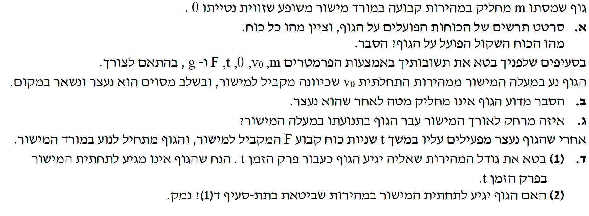

פתרון מודרך, מוסבר צעד-אחר-צעד הכולל תרשימי כוחות.

מה נתון: גוף שמסתו \( m \) מחליק במהירות קבועה במורד מישור משופע שזווית נטייתו \( \theta \).
כאשר אומרים לנו שהגוף נע ב"מהירות קבועה", אנחנו מיד מסיקים שהתאוצה שלו היא אפס (\( a = 0 \)). לפי החוק הראשון של ניוטון, אם התאוצה היא אפס, סכום הכוחות (הכוח השקול) הפועל על הגוף חייב להיות אפס! מצב זה נקרא "שיווי משקל דינמי" (הגוף זז, אבל הכוחות מאוזנים).
גוף שמסתו \(m\) מחליק במהירות קבועה במורד מישור משופע בזווית \(\theta\).
סרטוט תרשים כוחות הפועלים על הגוף (FBD), ציון מהות כל כוח, והסבר מהו הכוח השקול.
על פי החוק השני של ניוטון, הכוח השקול קשור לתאוצה:
מכיוון שנתון שהגוף מחליק במהירות קבועה, התאוצה שלו היא אפס (\( \vec{a} = 0 \)).
לכן, נציב זאת במשוואה ונקבל:
תשובה סופית לא': הכוח השקול הוא אפס מכיוון שאין לגוף תאוצה.
אם נבחר מערכת צירים שבה ציר \( x \) מקביל למישור, וציר \( y \) מאונך לו, נוכל לפרק את המשוואה לרכיבים:
בציר ה- \( x \): \( mg\sin\theta - f_k = 0 \Rightarrow \mathbf{f_k = mg\sin\theta} \).
תוצאה זו, שגודל כוח החיכוך הקינטי שווה בדיוק לרכיב המשקל המקביל למישור, תשמש אותנו בסעיפים הבאים!
הגוף נע במעלה המישור ממהירות התחלתית \( v_0 \), ובשלב מסוים הוא נעצר ונשאר במקום.
הסבר מדוע הגוף אינו מחליק חזרה מטה לאחר שהוא נעצר.
כאשר הגוף נעצר ונמצא במנוחה, כוח החיכוך הפועל עליו הופך מחיכוך קינטי (\( f_k \)) לחיכוך סטטי (\( f_s \)).
כדי שהגוף יישאר במקום (התאוצה עדיין אפס), על פי החוק הראשון של ניוטון, החיכוך הסטטי חייב לאזן את הרכיב של כוח הכבידה שמושך אותו מטה לאורך המישור (\( mg\sin\theta \)). כלומר:
אך האם החיכוך הסטטי מסוגל להגיע לערך זה מבלי להישבר?
בסעיף א' מצאנו שכאשר הגוף החליק מטה, החיכוך הקינטי היה שווה בדיוק לאותו ערך: \( f_k = mg\sin\theta \).
אנו יודעים כי עבור כל זוג משטחים, הערך המקסימלי של החיכוך הסטטי גדול או שווה לחיכוך הקינטי (\( f_{s,\max} \ge f_k \)).
מכאן נובע הקשר:
תשובה סופית לב': מכיוון שהחיכוך הסטטי המקסימלי האפשרי גדול (או שווה) מכוח החיכוך הקינטי, והחיכוך הקינטי הספיק כדי לאזן את כוח הכבידה במורד המישור בסעיף א', הרי שהחיכוך הסטטי בוודאי חזק מספיק כדי לאזן את כוח הכבידה ולהחזיק את הגוף במקום לאחר העצירה.
הגוף נזרק במעלה המישור עם מהירות התחלתית \(v_0\), ועל הגוף פועלים רכיב הכבידה והחיכוך הקינטי כפי שנבנה בסעיפים הקודמים.
איזה מרחק (\( \Delta x \)) הגוף עבר בתנועתו במעלה המישור מרגע זריקתו ועד עצירתו? (יש לבטא באמצעות \( v_0, \theta, g \)).
בזמן שהגוף נע במעלה המישור, כיוון המהירות שלו הוא כלפי מעלה. לכן, כוח החיכוך הקינטי פועל נגד כיוון התנועה, כלומר כלפי מטה לאורך המישור. נבחר ציר \( x \) שחיובי במעלה המישור.
נרשום את משוואת הכוחות עבור הגוף (בלבד) לאורך ציר ה-\( x \):
נזכור מסעיף א' שגודלו של כוח החיכוך הקינטי הוא: \( f_k = mg\sin\theta \). נציב זאת במשוואה:
נצמצם את המסה \( m \) משני אגפי המשוואה (מסה אינה יכולה להיות אפס) ונקבל את התאוצה:
הסימן השלילי בתאוצה אומר שכיוונה מנוגד לכיוון תנועת הגוף (שקבענו כחיובי). כלומר, וקטור התאוצה מצביע במורד המישור. כתוצאה מכך, גודל המהירות של הגוף הולך וקטן עד שהוא נעצר. (נזכור: \( g \) הוא גודל חיובי תמיד, \( g = 10 \text{ m/s}^2 \)).
אנו יודעים את המהירות ההתחלתית (\( v_0 \)), את המהירות הסופית ברגע העצירה (\( v = 0 \)) ואת התאוצה. נשתמש בנוסחה מקשרת מקום-מהירות (ללא זמן):
נציב את הנתונים שלנו:
נעביר אגפים ונבודד את \( \Delta x \):
\( \Delta x = \frac{v_0^2}{4g\sin\theta} \)
אחרי שהגוף נעצר, מפעילים עליו למשך \( t \) שניות כוח קבוע \( F \) המקביל למישור, והגוף מתחיל לנוע במורד המישור. מניחים שהגוף לא מגיע לתחתית המישור במהלך הזמן \( t \).
ד(1) לבטא את גודל המהירות לאחר זמן \(t\).
ד(2) לבדוק האם הגוף יגיע לתחתית במהירות שנמצאה ולנמק.
הגוף נע כעת במורד המישור. לכן, כוח החיכוך הקינטי פועל במעלה המישור. הכוח החיצוני \( F \) חייב לפעול במורד המישור (כדי לגרום לתנועה למטה, בהינתן שהגוף היה במנוחה וחיכוך סטטי החזיק אותו). נבחר כעת ציר \( x \) שחיובי כלפי מטה לאורך המישור.
נרשום את משוואת חוק שני של ניוטון עבור ציר תנועת הגוף (ציר \( x \)):
נציב שוב את מה שמצאנו לגבי החיכוך, \( f_k = mg\sin\theta \):
רכיב הכבידה והחיכוך מקזזים זה את זה לחלוטין! נשארנו עם:
נשתמש בנוסחת המהירות כפונקציה של הזמן. המהירות ההתחלתית ברגע הפעלת הכוח היא אפס (\( v_0 = 0 \)):
\( v = \frac{F}{m}t \)
השאלה בודקת מה קורה אחרי שעובר זמן \( t \). בשלב זה, הכוח \( F \) מפסיק לפעול. עלינו לנתח מחדש את משוואת הכוחות הפועלים על הגוף לאורך ציר תנועתו.
כאשר הכוח \( F \) מוסר, הכוחות שנותרים לפעול לאורך ציר ה-\( x \) הם רק רכיב המשקל כלפי מטה, והחיכוך הקינטי כלפי מעלה (שכן הגוף כבר בתנועה כלפי מטה).
כפי שראינו לאורך כל השאלה, \( f_k = mg\sin\theta \). לכן:
חזרנו בדיוק למצב שתואר בתחילת השאלה! סכום הכוחות על הגוף אפס. החוק הראשון של ניוטון קובע שגוף שהכוח השקול עליו הוא אפס, יתמיד במצב תנועתו. מכיוון שהגוף כבר צבר מהירות \( v = \frac{F}{m}t \), הוא ימשיך לנוע באותה מהירות, בקו ישר (במורד המישור), מבלי להאיץ או להאט.
תשובה סופית לד(2): כן.
לאחר שהכוח \( F \) מפסיק לפעול, שקול הכוחות על הגוף מתאפס (רכיב הכבידה מתקזז במדויק עם החיכוך הקינטי). לכן תאוצתו מתאפסת והוא ימשיך לנוע במהירות קבועה עד שיגיע לתחתית המישור, ואותה מהירות תהיה בדיוק המהירות שצבר עד לאותו רגע.